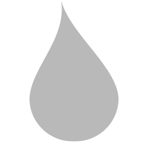
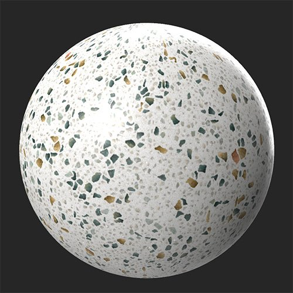
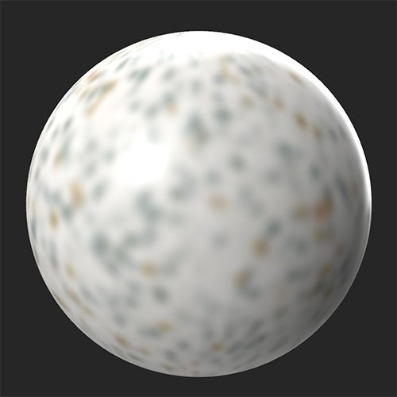

In: Adjustments
Blur the full material or select specific channels to blur.
In the images below the Blur filter has been applied to the base color channel.


Basic parameters
Custom by Channels
Adjust the amount of blur for each channel independently using these controls. First, enable the channel specific blur and a slider will appear to control the amount of blur applied to that channel.
Channel specific blur overrides Basic parameters > Intensity blur for the full material. So, if you set the material blur intensity to 1, but enable a channel and set it's blur intensity to 0, the channel will not be blurred at all, while all other channels will be blurred.